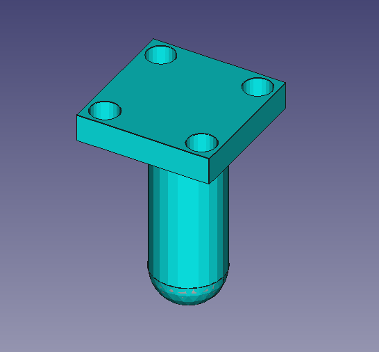
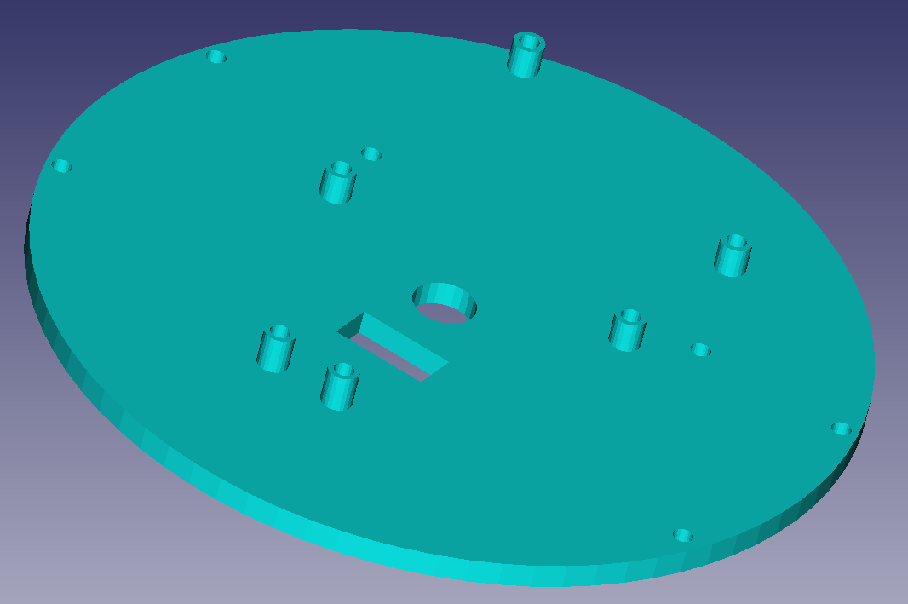
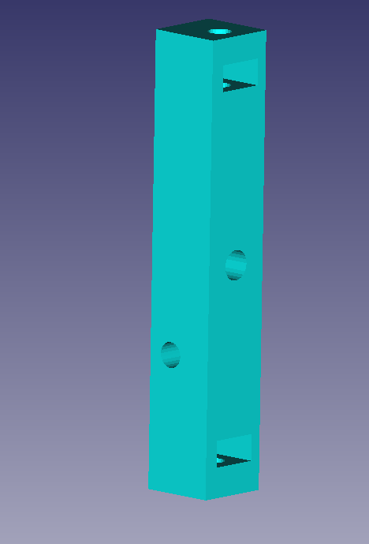
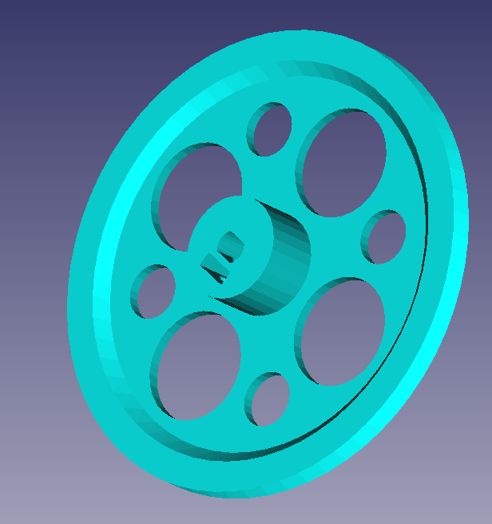
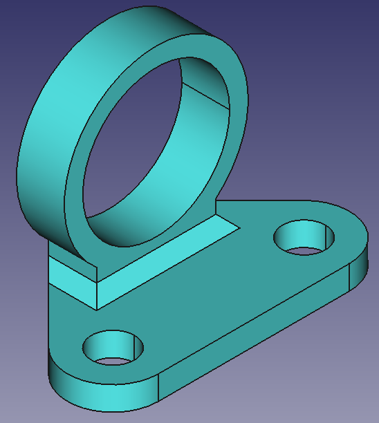

Archivos en FreeCAD
Descarga aquí los archivos en FreeCAD
| Imagen | Archivo CAD | Comentario |
|---|---|---|
|  | Ballcaster | Proporciona un soporte al Rupertobot, intentando reducir el rozamiento con el suelo al mínimo |
 |
Plataforma inferior | Incorpora un sistema de sujeción para bolígrafo o rotulador (experimental, pero la idea es que el Rupertobot acabe dibujando) |
|  | Plataforma superior | Tiene pendiente alguna señal que mejore la orientación a la hora de montarlo sobre la plataforma inferior |
|  | Columna | Une las plataformas superior e inferior con un ingenioso (a mí me lo parece) sistema de tornillos y tuercas (Necesitas imprimir seis) |
|  | Rueda | La rueda es la del Masaylo (que para eso lo diseñé yo, aunque me ayudaron los compis del Club de Robótica de Granada). En realidad, te sirve cualquier rueda del Escornabot |
|  | Esta pieza, lo confieso, se la he fusilado directamente desde nuestro Masaylo a Federico Coca. Que la fuerza te acompañe siempre, Fede. |